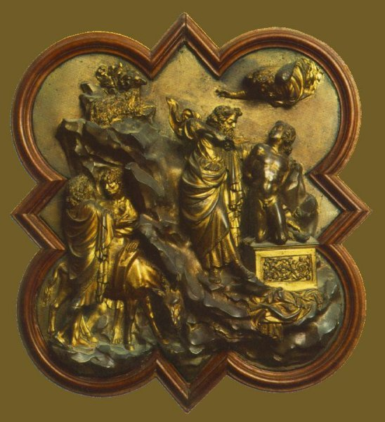

Giorgio
Vasari, Lives of the Artists,
written c. 1550
http://www.fordham.edu/halsall/basis/vasari/vasari4.htm
Lorenzo
Ghiberti
There
is no doubt that those in every city who by their merits obtain fame
become a
blessed light to those who are born after them. For there is nothing
that
arouses the minds of men, and makes them indifferent to the hardships
of study,
so much as the thought of the honour and advantage that the labour may
bring
them. This Lorenzo di Cione Ghiberti, otherwise Di Bartoluccio, knew
well. He
in his first years was put to the art of the goldsmith, but delighting
more in
the arts of sculpture and design, he studied colours and also cast
little
figures in bronze. About this time the Signory of Florence, with the
Guild of
the Merchants, seeing that there were at that time many excellent
sculptors,
both Florentines and strangers, determined that they would make the
second pair
of gates for S. Giovanni, the oldest and the chief church of that city.
So they
called upon all the best masters in Italy to come to Florence and make
trial of
their skill, requiring them to produce a subject picture worked in
bronze, like
one of those which Andrea Pisano had made in the first gate.
Bartoluccio
Ghiberti thereupon wrote to Lorenzo his son, who was then working in
Pesaro,
urging him to return to Florence, for this was an opportunity of making
himself
known and showing his skill. These words so moved Lorenzo that although
Pandolfo Malatesti and all his court were heaping him with caresses,
and would
scarcely let him go, he took his leave of them, and neither promise nor
reward
would detain him, for it seemed to him to be a thousand years before he
could
get to Florence. So setting forth he came safely to his own city. Many
strangers had already arrived and made known their coming to the
consuls of the
guild. They made choice of seven, three being Florentines and the rest
Tuscans,
ordaining for them a certain provision of money, and requiring that
within a
year each one should finish one subject in bronze of the same size as
those of
the first gate. And the subject was Abraham sacrificing Isaac his son,
for they
thought that it contained all the difficulties of the art, landscape,
figures
nude and draped, and animals. Those who took part in the contest were
Filippo
di Ser Brunellesco, Donatello, and Lorenzo, all Florentines; and Jacopo
della
Quercia of Sienna and Niccolo d'Arezzo his pupil, Francesco di
Vandabrina, and
Simone da Colle, famous for his bronzes, and they all made promise to
finish
the work in the time appointed. So each one set to work, and with all
diligence
and study put forth all his strength and knowledge to surpass the
others in
excellence, working secretly and keeping concealed what they did that
they
might not do the same things. Lorenzo alone, who worked by
Bartoluccio's
counsel, and who was required by him to make essays and many models
before he
resolved upon using them for the work, continually brought in the
citizens to
see, and sometimes strangers who were passing through, if they
understood the
matter, that he might hear their opinions; and so it came about that
the model
was very well done and without any defect. And having made the mould
and cast
it in bronze, it came out very well indeed, and he, with Bartoluccio
his
father, polished it with such patience and earnestness that it could
not have
been better finished.
So
the time being come when they were to be exhibited in competition, they
were
all finished and brought before the Guild of the Merchants for
judgment. And
when the consuls and many other citizens had seen them, opinions were
very
diverse about them. And there came many strangers to Florence, painters
and
sculptors and some goldsmiths, called by the consuls to aid them to
give
judgment, with others of that trade who dwelt at Florence. The number
of them
was thirtyfour, each one most skilful in his art. And although their
opinions
were different, one being pleased with the manner of this one, and
another with
that, nevertheless they agreed that Filippo Brunellesco and Lorenzo had
composed and finished the subject better than Donatello, although there
was
good drawing in his. Jacopo della Quercia had good figures, but there
was no
finish, although it was done with diligence. Francesco di Vandabrina's
work had
good heads and was well polished, but was confused in the composition.
That by
Simone da Colle was a good cast, that being his special art, but the
design was
not good. Niccolo d'Arezzo's figures were stunted and the work was not
well
polished. Only the piece which Lorenzo had brought as his specimen,
which may
still be seen in the merchants' hall, was perfect in all its parts; the
work
was well designed and well composed, the figures were graceful and
their
attitudes very beautiful, and it was finished with so much care that it
had no
appearance of having been cast and worked upon with iron tools, but
seemed
rather to have been breathed into existence.

Then
Donatello and Filippo, seeing the care that Lorenzo had taken with his
work,
withdrew into a corner, and talking together resolved that the work
ought to be
entrusted to Lorenzo, for it seemed to them that it would be both for
public
and private good that Lorenzo being young, for he was no more than
twenty,
should be enabled to bring forth those greater fruits of which this was
a
promise; and in their judgment he had executed it more excellently than
the
others, so that it would be rather the part of envy to take the work
from him
than a virtue to give it up to him.
Therefore
the work being entrusted to Lorenzo, he made a wooden frame of the
proper size,
and worked all the ornaments and decorations of the gate, and those
that were
to surround each compartment, and having dried the model in a house
which he
had bought over against S. Maria Nuova, where now stands the weavers'
hospital,
he made a great furnace, which I can remember to have seen, and cast
the frame
in metal. But as fortune would have it, it did not come out well;
however,
without losing courage, or being dismayed, he made another mould so
quickly
that none knew of it, and cast it again, and this time it came out
excellently
well. And so continuing his work he cast each subject by itself, and
fitted it
into its place. And the work was brought to perfection without sparing
time or
fatigue, and the composition of each portion was so well arranged that
it
deserves that praise which Filippo had given to the first part, and yet
greater. And so he was honoured by his fellow citizens and greatly
praised by
the artists both of his own land and strangers. The work with the
ornaments
round, of animals and festoons of iruit, cost twentytwo thousand
florins, and
the gates weighed thirtyfour thousand pounds.
After
this the fame of Lorenzo went on increasing every day, and he worked
for an
infinite number of persons, making for Pope Martin a clasp for his
cope, with
figures in high relief, and a mitre with leaves of gold, and among them
many
little figures which were held to be most beautiful. Also when Pope
Eugenius
came to Florence, to the coullcil held in 1439, and saw the works of
Lorenzo,
he caused him to make for him a mitre of gold, in weight fifteen
pounds, and
the pearls of it weighed five and a half pounds.
And
when Florence saw that the works of their great artist were so much
praised, it
was determined by the merchants to entrust to him the third pair of
gates of S.
Giovanni. And although the one he had made before had been by their
orders made
with ornaments like those on the gates of Andrea Pisano, yet seeing
that
Lorenzo had surpassed his, they gave him leave to make it in any manner
he
liked, so that it should be the most highly adorned, the richest, most
perfect,
and most beautiful that could be imagined. Neither was he to regard
time or
expense, but as he had surpassed all other sculptors, so was he to
surpass all
his other works.
Lorenzo
therefore began his work, and put into it all that he knew. And in
truth it may
be said that the work is perfect in everything, and is the most
beautiful work
in the world that has ever been seen in ancient or modern times. And
that
Lorenzo merits praise we know, for one day Michael Angelo Buonarroti
stopped to
look at the work, and some one asked him what he thought of it, and if
these
gates were beautiful, and he answered, "They are so beautiful that they
might well be the gates of Paradise." Praise truly just, and given by
one
who could judge!
Lorenzo
was aided in polishing and finishing the work after it was cast by many
young
men who afterwards became excellent masters, as Filippo Brunellesco,
Paolo
Uccello, Antonio del Pollaiuolo, and others. And besides the payment
which the
consuls of the guild gave him, the Signory bestowed upon him a good
estate near
the abbey of Settimo. Nor was it long before he was received among the
Signory,
and honoured with the supreme magistracy of the city. For which
grateful
conduct the Florentines deserve to be praised, as they have deserved to
be
blamed for the little gratitude they have shown towards others.